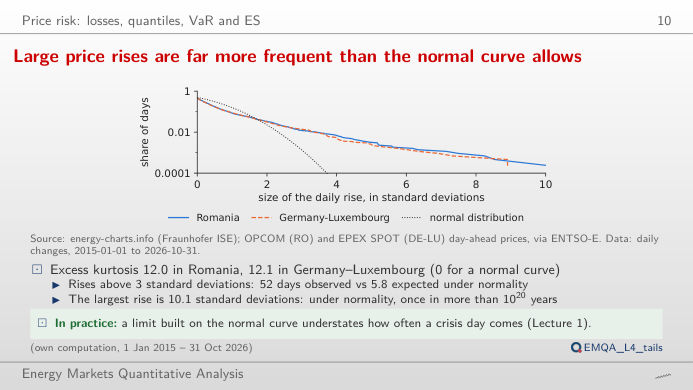
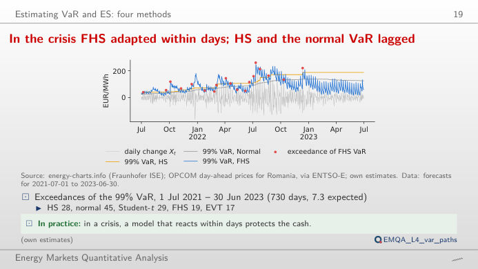
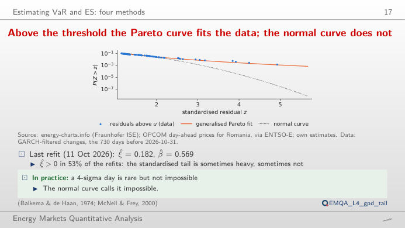
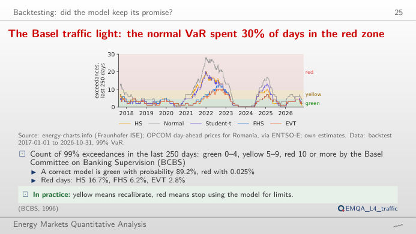
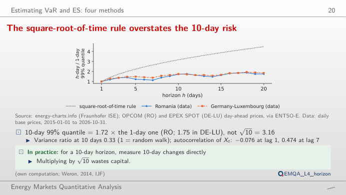
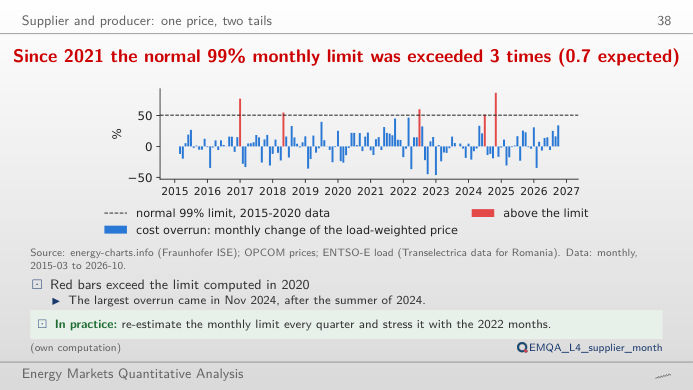

The slide of the lecture is on the left, the same figure on the right, recomputed in your browser from the course data (data/clean) when you move a control. The risk factor is the daily change of the Romanian day-ahead base price, Xt = Pt − Pt−1 (EUR/MWh): a rise is a loss for a supplier that buys on the day-ahead market. VaR (Value at Risk) is a quantile of the loss, ES (Expected Shortfall) the mean loss beyond it. The ▶ button moves the main parameter step by step.
Price risk: losses, quantiles, VaR and ES · Estimating VaR and ES: four methods · Backtesting: did the model keep its promise? · From quantiles to margins, guarantees and limits · Supplier and producer: one price, two tails
Price risk: losses, quantiles, VaR and ES
Large price rises are far more frequent than the normal curve allows

Answer
The daily changes have fat tails: excess kurtosis 11.97, and 52 rises above three standard deviations against 5.82 expected under the normal law. The normal VaR therefore understates the extreme quantiles, and the gap widens as α grows. ES (the mean loss beyond VaR) reacts even more, because it averages the extreme days the normal curve misses. Choose the period 2021–2022 to see both measures on the crisis years, or the last 365 days for the current risk.
Estimating VaR and ES: four methods
In the crisis FHS adapted within days; HS and the normal VaR lagged

Answer
The normal model is exceeded on 45 days, historical simulation (HS) on 28, FHS on 19 and EVT on 17 (expected 7.3). All methods were too low in the crisis, but FHS, which scales the residuals by a GARCH (generalised autoregressive conditional heteroskedasticity) volatility, reacts within days to a volatility jump, while HS and the normal model, with a 365-day window, adapt only slowly. The Kupiec test in the readout compares the exceedance rate of the window with 1 − α.
Above the threshold the Pareto curve fits the data; the normal curve does not

Answer
Yes, and this is the main practical difficulty of extreme value theory (EVT): a low threshold gives many exceedances but mixes in the body of the distribution; a high threshold uses only a few dozen points and the estimate becomes noisy. Move u from 80% to 97% and watch ξ and the implied 99.9% quantile. In the lecture, the shape at the 90% threshold varies between −0.38 and 0.33 across the 171 refits since 2017, positive in 53% of them.
Backtesting: did the model keep its promise?
The Basel traffic light: the normal VaR spent 30% of days in the red zone

Answer
In 29.5% of the days since the backtest window filled (from September 2017), against 6.2% for FHS and 2.8% for EVT; a correct model would be red only 0.025% of the time. The zones are binomial quantiles: green while the cumulative probability of the count under a Binomial(n, 1%) law is below 95%, red from 99.99%. Change the window to see the thresholds scale with n.
From quantiles to margins, guarantees and limits
The square-root-of-time rule overstates the 10-day risk

Answer
Only 1.72 (Germany–Luxembourg: 1.75). Daily price changes are negatively autocorrelated (ρ(1) = −0.076): a price spike is followed by a fall, so changes over several days partly cancel. The variance ratio at 10 days is 0.33, far below 1. The √h rule assumes independent changes and would overstate the 10-day VaR of a flat day-ahead position.
Supplier and producer: one price, two tails
Since 2021 the normal 99% monthly limit was exceeded 3 times (0.7 expected)

Answer
Three months out of 70, against 0.7 expected; the worst is November 2024, +86.6% (about 5.96 million EUR for 100 MW shaped like the national load). The limit estimated on calm years is too tight for the crisis and after. Move the end of the estimation sample: a limit that includes 2021–2022 is wider, and the count of later exceedances falls.
Day-ahead base prices: OPCOM PZU (Romania), EPEX SPOT (Germany–Luxembourg), via energy-charts.info (Fraunhofer ISE) and ENTSO-E (European Network of Transmission System Operators for Electricity); hourly load of Romania: ENTSO-E (Transelectrica data). Rolling one-day-ahead VaR forecasts from 2017-01-01: lectures/L4/analysis_L4.py (each forecast uses only the changes known the day before). Data to 2026-10-31, the cut-off of the lecture.